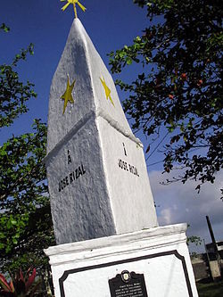
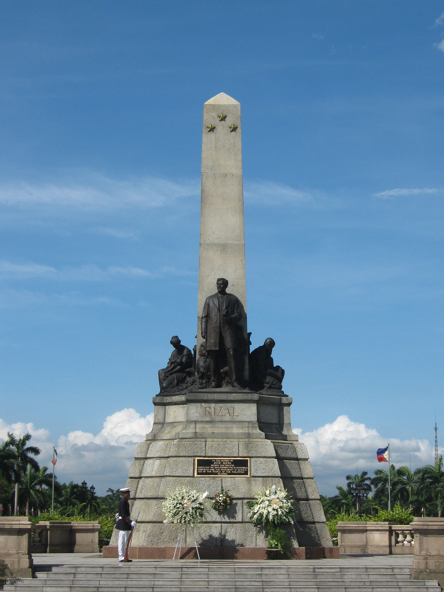
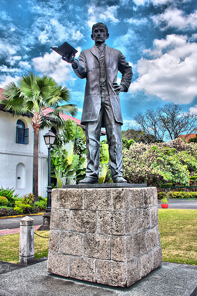
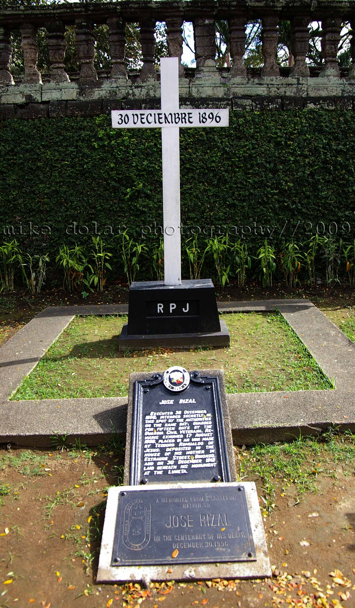
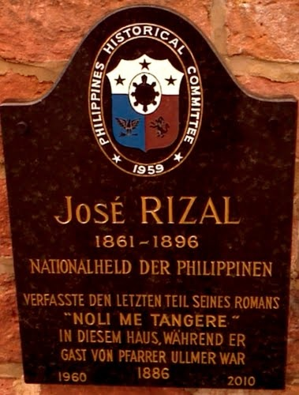
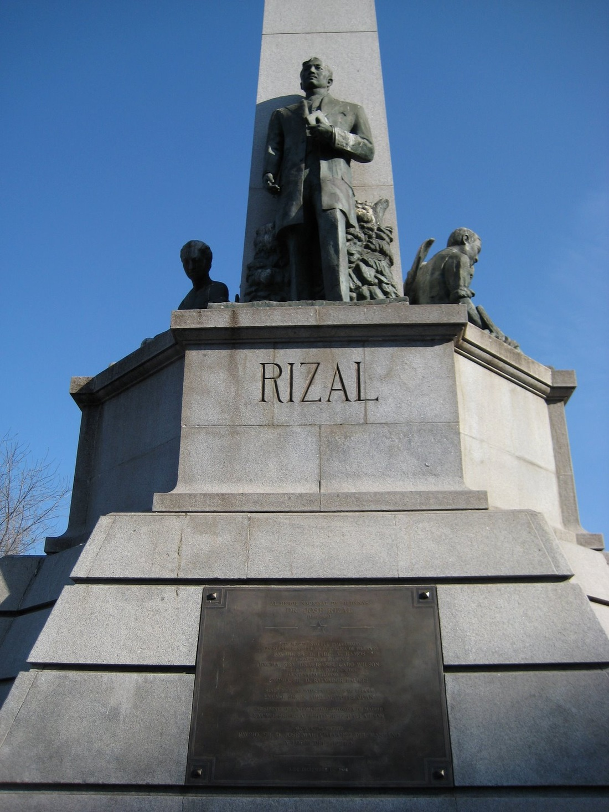
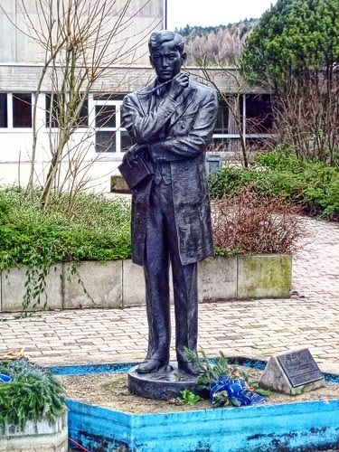
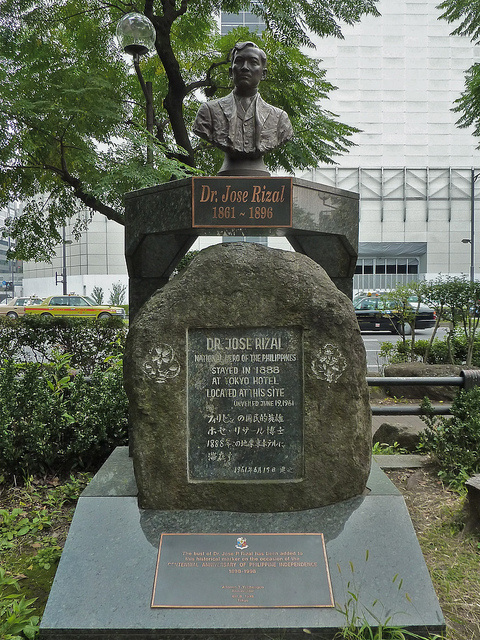
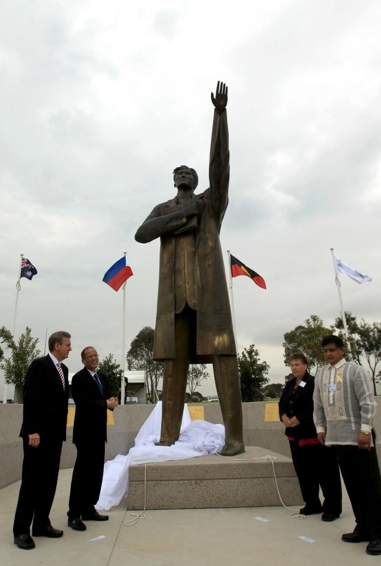

Legacy of Rizal
Jose Rizal is remembered for his intelligence, courage, passion, and of course, his spirit of
patriotism. To this day, he reminds the people of the Philippines how important our Independence
is. Rizal Day is a Philippine national holiday and is annually celebrated on December 30th to
commemorate the life and works of our hero, Dr. Jose Rizal. His founding of La Liga Filipina in
1892, a self-help organization that got people involved in the reforms in the colonial
government had an effect in the beginnings of the Philippine Revolution which resulted in
Philippine Independence in 1898. In honor of Jose Rizal, various establishments were named after
him including streets, a University (Jose Rizal University) and even a province! Memorials and
statues of Rizal are scattered all around the world also in tribute to the late hero.
Rizal's Legacy

The Rizal Monument in Daet, Camarines Norte

Rizal Monument in Manila

Jose Rizal statue in Fort Santiago

Rizal's grave in Paco Cemetery in Manila

Rizal plaque on a residence in Germany

Replica of the Jose Rizal Monument in Madrid

Statue of Jose Rizal in front of Louis Weiss Memorial Hospital in Chicago

Jose Rizal bust in Hibiya Park in Japan
